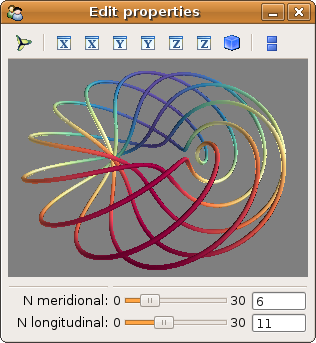

Mlab interactive dialog example¶
An example of how to modify the data visualized via an interactive dialog.
A dialog is created via TraitsUI from an object (MyModel). Some attributes of the objects are represented on the dialog: first a Mayavi scene, that will host our visualization, and two parameters that control the data plotted.
A curve is plotted in the embedded scene using the associated mlab.points3d function. The visualization object created is stored as an attribute on the main MyModel object, to modify it inplace later.
When the n_meridional and n_longitudinal attributes are modified, eg via the slide bars on the dialog, the curve is recomputed, and the visualization is updated by modifying inplace the stored plot object (see Animating the data).
This example is discussed in details in the section Embedding a Mayavi scene in a Traits dialog.
Python source code: mlab_interactive_dialog.py
# Author: Gael Varoquaux <gael.varoquaux@normalesup.org>
# Copyright (c) 2008, Enthought, Inc.
# License: BSD Style.
from numpy import arange, pi, cos, sin
from traits.api import HasTraits, Range, Instance, \
on_trait_change
from traitsui.api import View, Item, Group
from mayavi.core.api import PipelineBase
from mayavi.core.ui.api import MayaviScene, SceneEditor, \
MlabSceneModel
dphi = pi/1000.
phi = arange(0.0, 2*pi + 0.5*dphi, dphi, 'd')
def curve(n_mer, n_long):
mu = phi*n_mer
x = cos(mu) * (1 + cos(n_long * mu/n_mer)*0.5)
y = sin(mu) * (1 + cos(n_long * mu/n_mer)*0.5)
z = 0.5 * sin(n_long*mu/n_mer)
t = sin(mu)
return x, y, z, t
class MyModel(HasTraits):
n_meridional = Range(0, 30, 6, )#mode='spinner')
n_longitudinal = Range(0, 30, 11, )#mode='spinner')
scene = Instance(MlabSceneModel, ())
plot = Instance(PipelineBase)
# When the scene is activated, or when the parameters are changed, we
# update the plot.
@on_trait_change('n_meridional,n_longitudinal,scene.activated')
def update_plot(self):
x, y, z, t = curve(self.n_meridional, self.n_longitudinal)
if self.plot is None:
self.plot = self.scene.mlab.plot3d(x, y, z, t,
tube_radius=0.025, colormap='Spectral')
else:
self.plot.mlab_source.trait_set(x=x, y=y, z=z, scalars=t)
# The layout of the dialog created
view = View(Item('scene', editor=SceneEditor(scene_class=MayaviScene),
height=250, width=300, show_label=False),
Group(
'_', 'n_meridional', 'n_longitudinal',
),
resizable=True,
)
my_model = MyModel()
my_model.configure_traits()